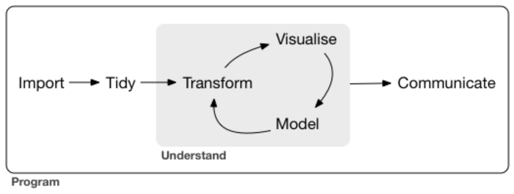

The tidyverse is a set of actively developed and well-maintained R packages to facilitate the typical data analysis workflow. Most but not all of the core tidyverse packages (there are now 8) were designed by Hadley Wickham, chief scientist at RStudio since 2013. His book R for Data Science is an incredible resource that is only roughly summarized in this tutorial. Plenty of his talks and interviews are available on YouTube as well; here’s my favorite from the VIZBI conference at EMBL last year.
Many R programmers who don’t explicitly know what the tidyverse is have at least used ggplot2, and if they got their start in base R as I did, probably found it annoying because of the slightly different syntax. The inspiration behind it was to be the first open source implementation of The Grammar of Graphics (hence ggplot), a statistical textbook from the 1980s that provided a concise way to describe a range of data visualizations. Grammar is simply an attribute of language that dictates how elements must be expressed in order to be understood, and where human languages predominately evolve the grammar that distinguishes them functionally, programming languages can be tailored and tweaked.
The goal of ggplot - getting from data to visualization more intuitively - is what paved the way for the rest of the tidyverse. R users who have ever melted or reshaped a data frame might be curious to know that those packages were also Hadley’s work and key milestones of the dplyr and tidyr packages in the mature tidyverse. As he puts it, very often the key to creating a visualization is about getting the data in the right form, hence the emphasis on data manipulation.

The canonical data analysis workflow above also encapsulates my entire job as a researcher: regardless of discipline or motivating question, the work starts with data and ends with communicating something learned from the nonlinear process of exploring that data. The tidyverse attracted me because it offered complete workflow coverage and consistency throughout, which felt like the best way to attain fluency and proficiency. Once I got into it, I realized that the weird syntax that kept me from liking ggplot2 a few years ago is exactly what gives it those attractive qualities.
To show my favorite features, let’s load the mtcars data frame.
data(mtcars)
head(mtcars)## mpg cyl disp hp drat wt qsec vs am gear carb
## Mazda RX4 21.0 6 160 110 3.90 2.620 16.46 0 1 4 4
## Mazda RX4 Wag 21.0 6 160 110 3.90 2.875 17.02 0 1 4 4
## Datsun 710 22.8 4 108 93 3.85 2.320 18.61 1 1 4 1
## Hornet 4 Drive 21.4 6 258 110 3.08 3.215 19.44 1 0 3 1
## Hornet Sportabout 18.7 8 360 175 3.15 3.440 17.02 0 0 3 2
## Valiant 18.1 6 225 105 2.76 3.460 20.22 1 0 3 1Then, let’s transform it to a tibble and see if you can spot the differences.
library(tibble)
as_tibble(mtcars)## # A tibble: 32 x 11
## mpg cyl disp hp drat wt qsec vs am gear carb
## <dbl> <dbl> <dbl> <dbl> <dbl> <dbl> <dbl> <dbl> <dbl> <dbl> <dbl>
## 1 21 6 160 110 3.9 2.62 16.5 0 1 4 4
## 2 21 6 160 110 3.9 2.88 17.0 0 1 4 4
## 3 22.8 4 108 93 3.85 2.32 18.6 1 1 4 1
## 4 21.4 6 258 110 3.08 3.22 19.4 1 0 3 1
## 5 18.7 8 360 175 3.15 3.44 17.0 0 0 3 2
## 6 18.1 6 225 105 2.76 3.46 20.2 1 0 3 1
## 7 14.3 8 360 245 3.21 3.57 15.8 0 0 3 4
## 8 24.4 4 147. 62 3.69 3.19 20 1 0 4 2
## 9 22.8 4 141. 95 3.92 3.15 22.9 1 0 4 2
## 10 19.2 6 168. 123 3.92 3.44 18.3 1 0 4 4
## # … with 22 more rowsTwo things should stand out: our rownames are missing and the data type of each column is now displayed in the console. Subtler differences: the full dimensions of the data are printed, and the first 10 rows were automatically displayed without us needing to call head(). If you’re following along in your own R console or R Notebook, there will be pronounced sylistic changes.
Aside from the lack of rownames, which is a philosophy choice of the tidyverse I will get back to shortly, the other changes are upgrades to the data frame in my opinion. I frequently need to peek at my data structures in the console when I’m programming, and always hated having to type e.g. head() or dim() to get information I needed to proceed. I also frequently find out that a bug I’m having is because my column variables are encoded differently than I thought (e.g. an integer rather than a factor). Seeing these attributes of my variables without needing to explicitly check for them forces me to confront potential issues early on.
The best programmers are the laziest programmers. Someone said that to me once and it stuck; you can only be lazy if you’re good at what you do.
What’s even better, 99 times out of 100 any function in R that accepts a data frame as an argument will accept a tibble as is without you needing to explicitly use as.data.frame() on it. That’s because a tibble is of class data.frame as well.
class(as_tibble(mtcars))## [1] "tbl_df" "tbl" "data.frame"Importantly, tibbles are not equivalent to numeric matrices, and need to undergo a few transformations before applying functions that require numeric matrices, which is frequently the case in my little biostatistics niche. I’ll get back to that shortly.
On a data structure level what differentiates a tibble from data frame or a matrix is that a tibble doesn’t have rownames. That may seem silly, but it’s actually really smart. Including e.g. “SampleID” and treating it as any other column doesn’t have any downsides (unless you need numeric matrices), but has the huge upside of never having to call rownames() when coding. The rowname is after all just another variable describing the data - why not treat it as such structurally.
Most R packages don’t use tibbles though, and many require rownames or matrices, which the package is aware of. There are two key methods for interconverting between data frames/matrices and tibbles that I use all the time.
One for converting from a data frame to a tibble to explore it in the console (rownames_to_column()), and another for converting from a tibble I’ve been working with to a data frame in order to apply an external function (column_to_rownames()).
# convert data frame with rownames (mtcars) to tibble
as_tibble(rownames_to_column(mtcars, var = 'model'))## # A tibble: 32 x 12
## model mpg cyl disp hp drat wt qsec vs am gear carb
## <chr> <dbl> <dbl> <dbl> <dbl> <dbl> <dbl> <dbl> <dbl> <dbl> <dbl> <dbl>
## 1 Mazda RX4 21 6 160 110 3.9 2.62 16.5 0 1 4 4
## 2 Mazda RX4 … 21 6 160 110 3.9 2.88 17.0 0 1 4 4
## 3 Datsun 710 22.8 4 108 93 3.85 2.32 18.6 1 1 4 1
## 4 Hornet 4 D… 21.4 6 258 110 3.08 3.22 19.4 1 0 3 1
## 5 Hornet Spo… 18.7 8 360 175 3.15 3.44 17.0 0 0 3 2
## 6 Valiant 18.1 6 225 105 2.76 3.46 20.2 1 0 3 1
## 7 Duster 360 14.3 8 360 245 3.21 3.57 15.8 0 0 3 4
## 8 Merc 240D 24.4 4 147. 62 3.69 3.19 20 1 0 4 2
## 9 Merc 230 22.8 4 141. 95 3.92 3.15 22.9 1 0 4 2
## 10 Merc 280 19.2 6 168. 123 3.92 3.44 18.3 1 0 4 4
## # … with 22 more rows# convert tibble to data frame with rownames
mtcars.tbl <- as_tibble(rownames_to_column(mtcars, var = 'model'))
head(column_to_rownames(mtcars.tbl, var = 'model'))## mpg cyl disp hp drat wt qsec vs am gear carb
## Mazda RX4 21.0 6 160 110 3.90 2.620 16.46 0 1 4 4
## Mazda RX4 Wag 21.0 6 160 110 3.90 2.875 17.02 0 1 4 4
## Datsun 710 22.8 4 108 93 3.85 2.320 18.61 1 1 4 1
## Hornet 4 Drive 21.4 6 258 110 3.08 3.215 19.44 1 0 3 1
## Hornet Sportabout 18.7 8 360 175 3.15 3.440 17.02 0 0 3 2
## Valiant 18.1 6 225 105 2.76 3.460 20.22 1 0 3 1Matrices require an extra step, and if you’re thinking “I thought she said this would save time not add steps” - here’s a concrete example from one of my actual workflows. I am trying to benchmark an in-house statistical package that works with numeric matrices, which looks something like this: 1) use readr to read in tabular data, which defaults to a tibble type, 2) tidy it locally i.e. obsessively print it to the console after each step to make sure it worked, 3) run two lines of code to before feeding it into that package, 4) run two more lines on the results to get it back into a tibble so I can continue my analysis.
Ultimately, typing two lines to interconvert has been a lot more efficient than having to question my data structure (literally, by asking it dim() or head() or class(df$column)) repeatedly throughout an exploratory analysis/tidying session. I worked exclusively in base R for my MSc thesis and remember being truly enraged for a tiny second each time I accidentally just typed a variable name and watched a huge matrix print to the console - erasing my thought process and forcing me to retype along with e.g. dim() this time.
One of the weirdest things about the tidyverse that probably deters beginners, as it did me, is its use of new operators: + in ggplot2 and the pipe %>% elsewhere. Bioinformaticians coming from other scripting and shell languages might be more comfortable thinking flexibly about operators, but it was pretty foreign to me even as someone with a (distant) programming background.
The intent is to make code more readable, almost like a recipe. Indeed, the whole idea of The Grammar of Graphics was to break a data visualization down into raw ingredients, which is reflected in the ggplot2 implementation that combines these ingredients stepwise. The pipe however comes from the magrittr package and it functions by ‘feeding’ the product of a function or calculation forward to another one.
From our above example interconverting between data frames and tibbles, here’s how the pipe operator would execute the same command:
mtcars.tbl <- mtcars %>%
rownames_to_column(var = 'model') %>%
as_tibble()This is the most general way the pipe is used (but not the only one); the first line is always the variable you wish to create followed by what you’re starting with followed by the %>% operator. In our example, mtcars is fed into rownames_to_column() which doesn’t need us to explicitly give mtcars as a first argument anymore - same with as_tibble().
In my opinion, this is not only easier to read but also a lot less frustrating when working in the console. I suspect the tidyverse developers work on Macs and aren’t used to having a home/end/insert key, because cursoring around to add parentheses and whatnot without those three keys was the bane of my R existence before I started using pipes.
Importantly, the pipe only works with tibbles, but its use extends far beyond the tidyverse: the pipe operator and ‘piping’ works for base R commands (like nrow()) and even functions from specialized packages that read data frames, too.
Here are two equivalent expressions calculating a Spearman correlation matrix from mtcars.
cor.mat <- cor(mtcars, method = 'spearman')
cor.mat <- mtcars %>%
cor(method = 'spearman')The pipe actually makes the code longer, but what about the next step? What if we don’t care at all about the actual correlation matrix and just want to plot it?
library(corrplot)
# nested function calls
cor.plot <- corrplot(cor(mtcars, method = 'spearman'))
# intermediate variable stored
cor.mat <- cor(mtcars, method = 'spearman')
cor.plot <- corrplot(cor.mat)cor.plot <- mtcars %>%
cor(method = 'spearman') %>%
corrplot()There’s a way to pipe to functions that ask for a data frame as the second or third argument, or only want a specific column of your data frame. That is slightly advanced though and I will table it for later along with the purrr package and formula shortcuts.
Hopefully you get the potential, but the real value of the pipe only became clearer to me the more intricate my manipulations and data structures became. I use them pretty exclusively and will continue to point out their utility to me.
Straight from the documentation, it makes code more readable by:
The typical data analysis project is a set of interconnected steps - a workflow - and there are benefits to using programming as a tool throughout, including automation and reproducibility (it’s easy to save and rerun code), as well as the ability to handle more difficult problems later on.
R is an open source programming language already tailored to statistical analysis. Its base implementation enables extensive modelling and visualization and thousands of specialized packages and niches have emerged on top of this (e.g. phyloseq for the microbiome community). The tidyverse is a large initiative to streamline the entire data analysis workflow by encompassing what comes before and after statistical analysis into a coherent set of packages.
It involves learning some new syntax, and some lingo. For light R users, simply investing in tibbles and the pipe (%>%) operator will allow you to interact with your raw data in a less frustrating and error-prone manner and generate more readable code. Similarly, understanding even a little bit how ggplot2 was structured will make working with it more intuitive.
For those working extensively in R, committing to that as well as tidy data structures will make you a better, more curious programmer. Especially if you are self-taught, the tidyverse is the quickest path to proficiency for data analysis in R. The documentation is immaculate, there are cheatsheets as well as deeper resources available, plus an active community on GitHub and Stack Overflow. Mastery of the basics opens up a wealth of more advanced tools that I will advocate for in future posts, like nested list-columns and the purrr package.